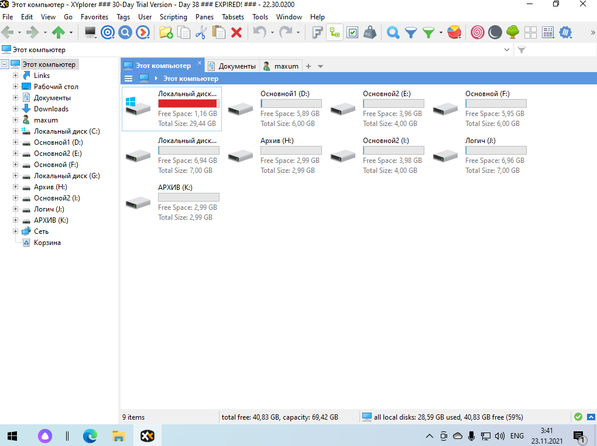

XYplorer – это продвинутый файловый менеджер c большим количеством полезных функция. Отличается поддержкой мультивкладок, благодаря чему можно открывать любое количество окон и комфортно переключаться между ними. Это платный файловый менеджер, есть конечно и бесплатная версия, но длиться она всего 30 дней. Интерфейс программы приятный и напоминает проводник Windows.
Основные возможности:
- Задание шаблонов для команд типа открытия, копирования, перемещения, переименования, создания файлов
- Поддержка скриптов
- Синхронизация папок
- Гибрид проводника и двухпанельного файлового менеджера
- Настройка отличных от системных ассоциаций файлов
- Огромнейший ассортимент критериев сортировки данных, включая специфические параметры для медиафайлов
- Избранное, система фильтрации и тегирования
- Пакетное переименование данных
- Удаление данных с их затиранием
- Удаление заблокированных файлов и папок
- Выгрузка в буфер путей и свойств данных
- Внутренний поиск
- Внутренний просмотр для отдельных типов файлов
Рассмотрим интерфейс и основные функции программы.

У XYplorer предусмотрен быстрый поиск по файлам, с воможностью задания критериев
XYPlorer позволяет добавлять несколько избранных папок, изменять их цвет
XYplorer поддерживает возможность открытия двух вкладок одновременно.
В XYplorer можно назначать горячие клавиши для различных действий в менеджере.